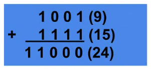
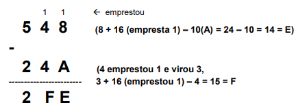

◉ Operações com sistemas binários
➤ Adição binária
Da mesma forma que é feita a adição de números decimais, é feita a adição de números binários.
Para ilustrar, vamos lembrar como é feita a adição decimal:

Primeiro é realizada a operação (no caso a soma) entre os dígitos menos significativos
(least-significant-digit — LSD) que nos fornece o valor 7. Os dígitos da segunda posição são
então somados, e o resultado é 13, gerando um carry que vale 1, para a terceira posição.
Assim na terceira posição temos 1+3+4 e isso produz uma soma igual a 8.
De maneira análoga, os mesmos passos são seguidos em uma adição binária. Mas, apenas quatro
situações podem aparecer ao se somar dois dígitos binários (bits) em qualquer posição.
Esses casos são:
É importante enfatizar que o último caso somente ocorre quando dois bits de uma determinada
posição estão em nível 1 e há um carry que veio da posição anterior. Para entender vejamos o exemplo:

➤ Subtração binária
Como na adição, a subtração binária também é realizada como a subtração de números decimais.
E nesse caso, também existem apenas quatro situações possíveis quando se subtrai um bit de
outro em qualquer posição de um número binário. Elas são:
Para esclarecer o último caso, que ilustra a necessidade de tomar emprestado da próxima coluna
para a esquerda quando subtrair 1 de 0, aqui vai um exemplo da subtração de dois números
binários (com equivalentes decimais entre parênteses):
◉ Operações Aritméticas (Hexadecimal)
➤ Soma de números hexadecimal
Para a soma de base hexadecimal,
devemos respeitar, da mesma maneira que
na base decimal, o limite do algarismo, o
qual não poderá ultrapassar o valor máximo
que é F(15), aumentando em uma unidade o
algarismo antecessor.
➤ Subtração de números hexadecimal
Para a subtração de base hexadecimal,
devemos observar a regra de emprestar “1”
do próximo algarismo, o que na realidade
significa o empréstimo de 16, ou seja, o
máximo de algarismo na base 16.
